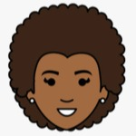

Camila dos Anjos
Desenvolvedora Front-end
Olá! Meu nome é Camila, tenho 31 anos e estou passando, e amando,
por uma transição profisisonal para a área de TI.
Aqui vocês encontrarão minhas formações, páginas de inspiração e contatos.